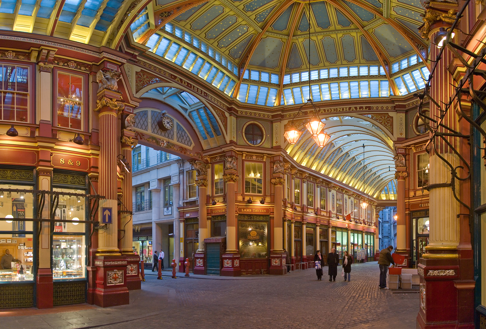

¿Alguna vez has soñado con sumergirte en la cultura y la historia de Escocia? ¡Ahora es posible con nuestros grupos de lecturas organizados en viajes temáticos! Nuestro viaje temático al Castillo de Eilean Donan te llevará a una aventura épica a través de la rica historia de Escocia.

El Leadenhall Market es el lugar perfecto para ti. Este mercado histórico es uno de los más antiguos y emblemáticos de la ciudad, y es conocido por sus techos de vidrio y hierro forjado, sus calles adoquinadas y sus tiendas y bares acogedores. El Callejón Diagon fue escenario de Harry Potter.